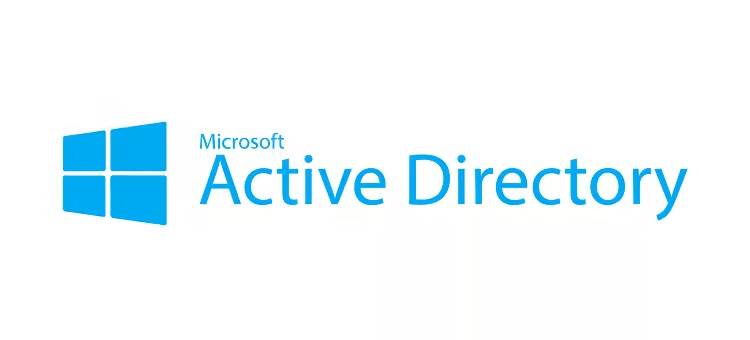

Creating a ProxMox Server to Host My Domain Controller and User Machines.
My next homeserver lab project was setting up a Windows Server Active Directory domain.
In the first part of this lab, I set up the AD Domain Controller. After that, I'll cover the creation of Users and OUs (Organizational Units).
I used Windows Server 2019 because the ISO image is easy to find and download. There is also a vast amount of documentation available online for this operating system.

The ISO must first be uploaded to the Proxmox server before the VM can be created.
An ISO image (or optical disc image) is a disk image that contains everything that
would be written to a physical disk—in our case, a Windows Server 2019 installation disk.
The virtio-win ISO contains tools that make communication run more smoothly
between Proxmox VE (virtual environment) and Windows operating systems.
After creating the Windows Server VM (virtual machine), make sure that the required ISO images are mounted to the CD/DVD drives so they can be accessed during installation.
The ip neigh command displays the mapping between IP addresses and MAC addresses for
devices on the LAN (local area network), also known as “neighbors.” The Windows Server's
address 10.0.0.10 isn't known yet.
The Windows Server can be reached by a ping scan, so the LAN connection is working correctly.
Now that we know the server was created and is connected to the network, we can move forward with promoting it to a DC (Domain Controller) by installing the AD DS--Active Directory Domain Services--role.
The operating system generates a default computer name during installation. Now is a
good time to make any changes. I changed it to the easily recognizable string LAB-DC-01.
Specifying the details of the computer's intended use can be helpful as well.
Next, enable remote connections to allow connections from other network devices.
The Ethernet controller wasn't configured during installation. This is one reason why we
need the virtio-win ISO image—the necessary device drivers will be installed from it.
Right-click the Ethernet Controller, select Properties, and review the Device Status section to see the explanation of the issue. We need to update the device driver. Select Update Driver and navigate to the appropriate file. In my case, the file path is:
D:\NetKVM\2k19\amd64\netkvm.infOnce the Ethernet device driver has been updated, we can configure it to our specifications. Here, we chose a static IP address to keep our network configuration simple.

We test connectivity between the Windows Server and the Proxmox server using a ping scan. The ping scan fails, indicating there was an issue with our configuration.
The ipconfig /all command shows that the operating system is still auto-configuring
the IPv4 address as something other than the 10.0.0.10 we set manually.
DHCP (Dynamic Host Configuration Protocol) will dynamically assign an IP address to the host from a pool of available addresses. While this is convenient in some scenarios, using a static address provides predictability. The following two scripts disable DHCP on this server:
- The first script tells Windows not to use any default route assigned by DHCP or RA (Router Advertisement) on the specified “Ethernet” interface.
- The second script disables route advertisement on the interface.
This allows us to control how we want traffic routed by preventing the system from acting like a router. After making these changes, DHCP Enabled is now set to “No,” and we have the correct IP.
One final change is needed before ping scans will work. By default, Windows blocks ICMP
packets, which are what the ping tool uses. The following PowerShell script enables a
Windows Firewall rule to allow incoming ICMPv4 Echo Request packets.
We finally have the server's Ethernet interface connected properly! Now we can move on to promoting the server to a Domain Controller. The following PowerShell command installs the Active Directory Domain Services dependencies, including management tools.
Next, we create a new Active Directory Forest on the server and promote it to the first
domain controller in the forest. The FQDN (fully qualified domain name) is set, as well as a
NetBIOS name for legacy compatibility. The SafeModeAdministratorPassword parameter
prompts for a password to be used for DSRM (Directory Services Restore Mode), which is a
special safe mode for domain controllers used for recovery and repair.
A prompt to install DNS should also appear during this process. Choosing Yes at this time is much easier than performing manual configuration later and is recommended.
We can confirm that the promotion was successful by navigating to the Server Manager menu (not visible before) and viewing the AD DS details.
Selecting Tools → Active Directory Users and Computers opens the configuration menu where new AD objects (users, organizational units, group policies, etc.) can be created, edited, and deleted for the domain.
Next, verify that the Domain Controller is configured to run DNS. Active Directory depends on DNS (Domain Name System) for everything—locating domain controllers, joining the domain, authenticating users, applying group policies, finding services, and more. When a domain controller is also a DNS server, it automatically registers SRV (service) records to advertise its services. It is common for organizations to have internal DNS--AD- integrated on DCs--and external DNS (public-facing) that work together.
The Get-ADDomain PowerShell command displays information about the AD domain.
Here we can see that everything installed correctly and our promotion of the server to DC was successful!
Summary
We spun up a Windows Server 2019 VM in Proxmox, got it talking to the network using VirtIO drivers, and locked in a static IP. After tweaking the firewall to allow ping scans, we promoted the server to a Domain Controller, set up Active Directory Domain Services, and let it handle DNS. A quick check A quick check confirms everything's running smoothly and ready for adding users, groups, and other domain goodies.
I hope you have learned something new and enjoyed your time in this tutorial. If so, please check back later, as additional content will be posted as it becomes available!